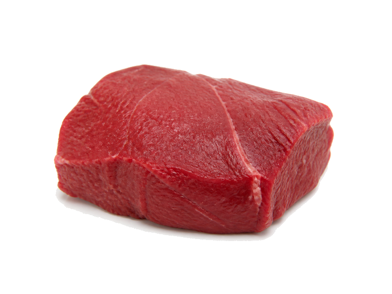

Mięsa i ryby
Antrykot wołowy
Antrykot wołowy: 25 g białka, 259 kcal, 0 g węglowodanów i 17 g tłuszczu na 100 g. Kategoria: Mięsa i ryby.
Kalorie259 kcalna 100 g
Białko / proteiny25 g
Węglowodany0 g
Tłuszcz17 g
Cena (szac.)~3,44 złza 100 g
Ceny zaktualizowano: maj 2026 (szacunek — ceny w popularnych supermarketach)
Porcja: porcja (180g)
| Kalorie | 466 kcal |
|---|---|
| Białko | 45 g |
| Węglowodany | 0 g |
| Tłuszcz | 30.6 g |
| Cena (szac.) | ~6,19 zł |
Szczegółowe składniki odżywcze na 100 g
| Wartość energetyczna (kalorie) | 259 kcal |
|---|---|
| Białko (proteiny) | 25 g |
| Węglowodany | 0 g |
| Tłuszcz | 17 g |
| Tłuszcze nasycone | 7 g |
| Tłuszcze nienasycone | 10 g |
| Witaminy i minerały | Żelazo, Witamina B12, Cynk |
| Współczynnik kcal / 1 g białka | 10.4 |
| Cena produktu (szac. za 100 g) | ~3,44 zł |
| Cena za 100 g białka (szac.) | ~13,76 zł |